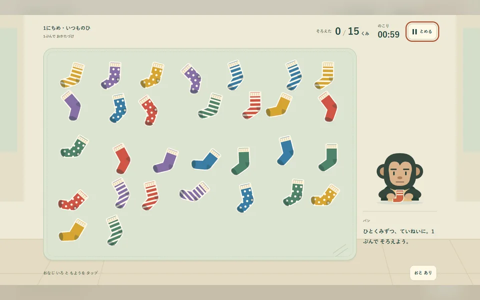

このゲームについて
まじめなチンパンジーのパンと一緒に、色と模様が同じ靴下を二枚ずつそろえます。日が進むと猫や赤ちゃん、幽霊などが現れ、靴下を動かしたり見え方を変えたりします。
遊び方
同じ色と模様の靴下を二枚タッチします。重なって見えにくいときはドラッグして動かせます。制限時間内にすべての組をそろえると次の日が開き、三十日目まで物語が続きます。
ゲーム中に行うこと
- 色と模様を見比べて同じ靴下を二枚選ぶ
- 重なった靴下を動かしながら組み合わせを見つける
ここではゲーム中の活動を説明しています。能力の向上や、特定の効果・改善を保証するものではありません。